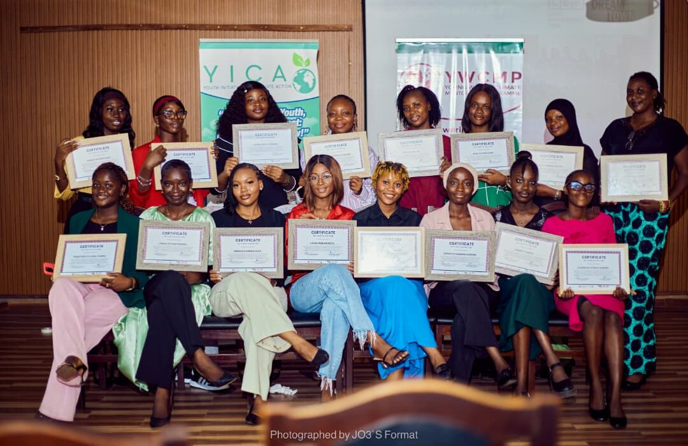
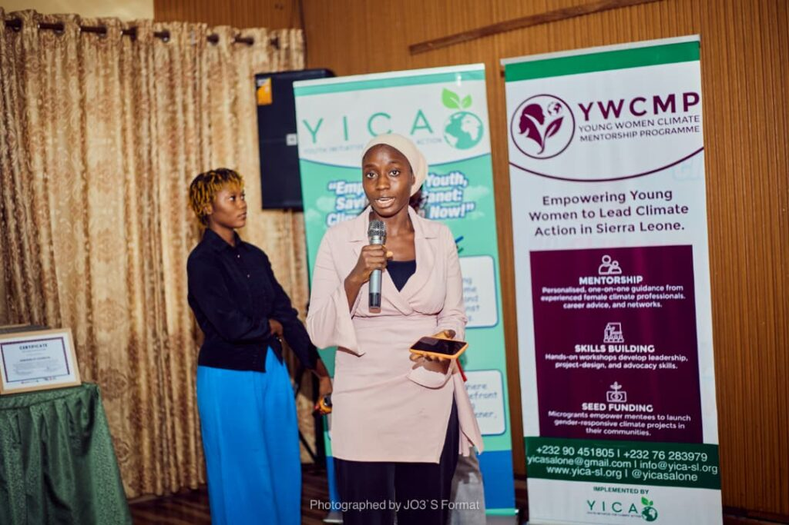
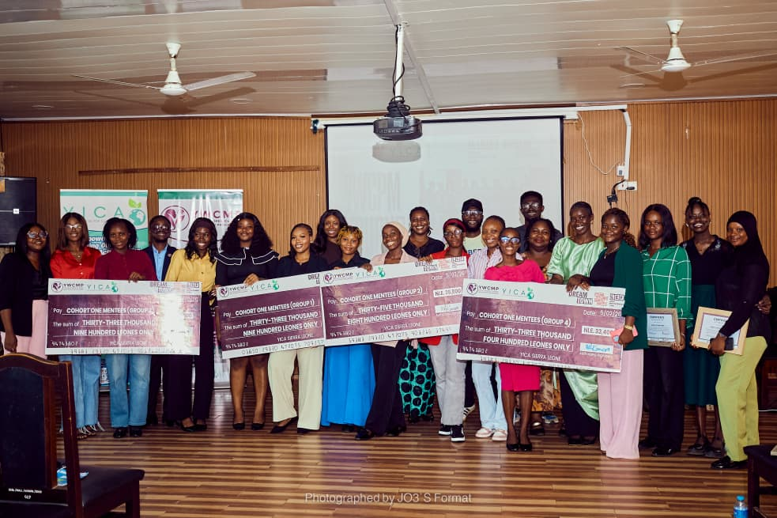

We proudly closed the first cohort of the Young Women Climate Mentorship Programme with a celebration of leadership, learning, and youth-led climate action.

Launched in July 2025 and implemented by the Youth Initiative for Climate Action Sierra Leone, the six-month programme supported 20 young women through mentorship, training, and field visits. The focus was clear: build strong climate knowledge, strengthen leadership confidence, and support young women to design practical responses to environmental challenges in their own communities.

Over the course of the programme, mentees worked in groups to move ideas into action. At the closing ceremony, the young women presented four community-based climate projects developed in groups of five. Each group received a seed grant of 1,500 US dollars to support early implementation. The micro-grants were generously provided by Dreamtown and marked a key step from learning to real community impact.

The ceremony also featured certificate presentations and reflections on the journey of the cohort. Guest speakers included Isatu Manja Kargbo from the Mayor's Delivery Team and Sallieu Kanu from C40 Cities. Their remarks highlighted the value of youth leadership, strong partnerships, and inclusive approaches to urban climate action.
We extend our appreciation to our donors, The Fund for Global Human Rights through the Legal Empowerment Fund and Dreamtown, for investing in young women-led climate solutions. We thank C40 Cities for their trust, collaboration, and technical support throughout the programme.
We also recognize the mentors whose guidance and commitment shaped every stage of this journey. To the mentees, your growth, confidence, and leadership stand out. Your communities are stronger because of your work.
We thank our guest speakers, partners, and the entire team whose dedication made the programme a success.
Photo credit: JO3's Format